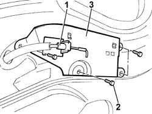

7005C60 FRONT DOOR OPENING IDLER DEVICE BRACKET/MOUNTING (ONE) LEFT OR RIGHT - R.R.
- Path
- Procedures > 70 FITTINGS > 7005 PASSENGER COMPARTMENT FRONT SIDE DOORS > 7005C FRONT LOCK CONTROLS > 7005C60 FRONT DOOR OPENING IDLER DEVICE BRACKET/MOUNTING (ONE) LEFT OR RIGHT - R.R.
- Kind
- repair procedure (removal / refitting; the operation number is the code)
- Applies to
- all engines; all production periods
- Interactive page
- https://sloeber94.github.io/elrnDB-fDct/en/#/244001434
Applies to: all engines; all production periods
 Removing
Removing
 Refitting
RefittingOp. 7005C35 BARREL FOR FRONT SIDE DOOR LOCK - R+R
- Disconnect the negative battery terminal.
Op. 7005E22 L/H OR R/H FRONT DOOR PANEL RADIO GRILLE (ONE) - R+R
Op. 5570T90 FRONT SPEAKER - R R
Op. 7005E38 FRONT SIDE DOOR INTERIOR HANDLE-R R
Op. 7005C51 FRONT SIDE DOOR INNER CATCH DEVICE - R+R FOR REPAIR OR REPLACEMENT
1. Detach the cable clip from the bracket/mounting for the door opening idler.
2. Undo the retaining bolts.
3. Remove the door opening idler bracket/mounting.

Applies to: all engines; all production periods
Refitting
Removing- Position the door opening idler bracket/mounting and tighten the fixing bolts.
- Position the cable clip on the bracket/mounting for the door opening idler.
Op. 7005C51 FRONT SIDE DOOR INNER CATCH DEVICE - R+R FOR REPAIR OR REPLACEMENT
Op. 7005E38 FRONT SIDE DOOR INTERIOR HANDLE-R R
Op. 5570T90 FRONT SPEAKER - R R
Op. 7005E22 L/H OR R/H FRONT DOOR PANEL RADIO GRILLE (ONE) - R+R
- Connect the negative battery terminal.